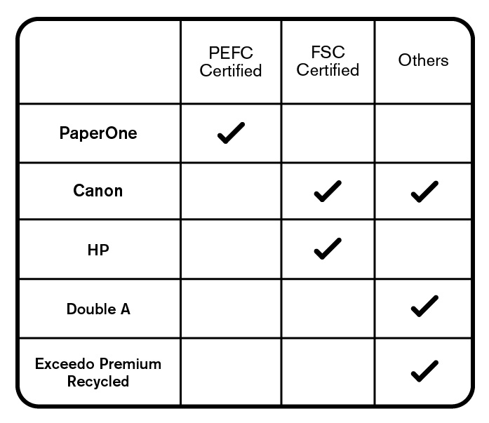

Tips
#1 Ask
Ask your professors if they’re fine with submissions printed duplex
(double-sided) or printed on recycled paper.
Because as it turns out most professors actually don’t mind!
#2 Check the Label
Vote for sustainable paper products with your purchases!
Choose eco-friendly! Look for PEFC Certified or FSC Certified products. Products with these certification mean they are sustainably sourced and produced. They may be a little pricier but by purchasing them, we vote for sustainable products and for companies that take care of the environment.
